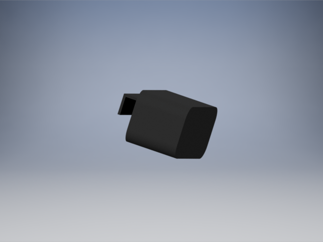

The Tech Cane is an innovative cane that is suited for visually impared persons of any age.
Users simply hold the cane in front of them and obstacles will be sensed by the eye of the cane!
The cane will then vibrate in the direction of the object, warning the user of possible danger.

The chip that attaches to the user's sunglasses with clip.
The Tech Cane then sends a signal to a remote machine that it attatched to the person's sunglasses.
The machine then tells the person how move, by using previous information gathered by the person's walking length, style, and speed!